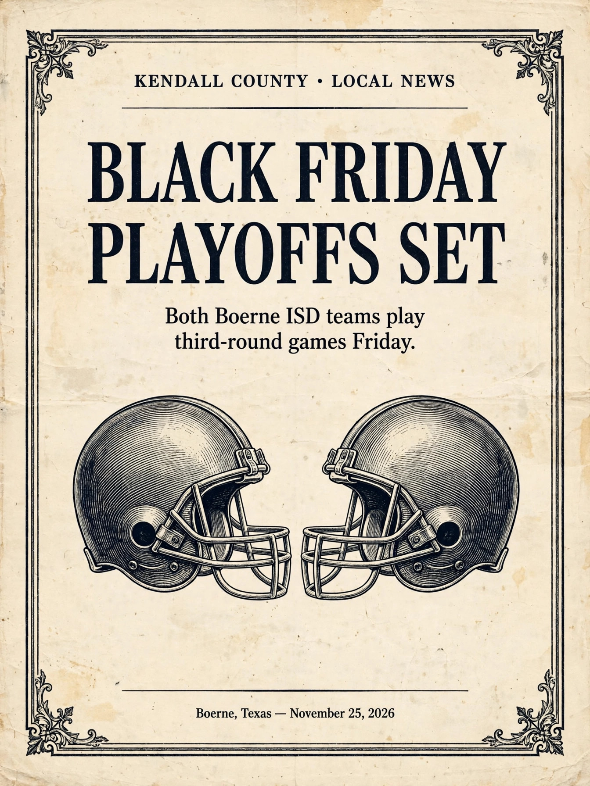

Both Boerne ISD teams play Black Friday
Both Boerne ISD teams play Black Friday
Boerne High and Boerne Champion both play third-round football playoff games on Friday, November 27, the day after Thanksgiving.
Boerne (12-0) plays Liberty Hill Legacy Ranch (7-5) at 1 p.m. Friday at Gupton Stadium in Cedar Park, per the Boerne Star's playoff information. The winner advances to the regional final, the fourth round, next weekend.
Champion (11-1) plays Austin Anderson (10-2) at 2 p.m. Friday at Bob Shelton Stadium in Buda, per the Star. Dave Campbell's Texas Football lists the same times and stadiums for both games.
Both games are rematches from the regular season. Boerne beat Legacy Ranch 32-27 on November 6, per the Star. Champion beat Anderson 61-32 on September 25 at Boerne ISD Stadium, per the Star.
Boerne reached the third round with a 41-7 win over Mercedes. Champion reached the third round with a 72-14 win over McAllen.
Sources
- Boerne Star, Black Friday football playoff info for Boerne ISD teams, November 2026
- Dave Campbell's Texas Football, TXHSFB Playoffs: Game Times and Locations, November 2026
- Boerne Star, Greyhounds face district foe Legacy Ranch in third round on Black Friday, November 25, 2026
- Boerne Star, Chargers square off against Anderson on Friday in third round of playoffs, November 25, 2026